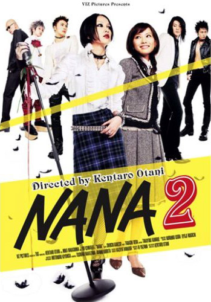

|
TOP 5 - Os Mais Vistos do Ano
|
- Naruto Shippuuden (Naruto: Crônicas do Furacão)
Direção: Hayato Date
Studio Pierrot
2007 - Atualmente
147 Episódios (em andamento)
Sinopse: A história acontece ao redor de um Naruto mais velho e um pouco mais maduro e sua jornada para salvar
seu amigo Uchiha Sasuke das garras do Ninja Orochimaru.
|
|  |
NANA 2
Direção: Kentarô Ôtani
Roteiro: Ai Yazawa (mangá)
2006
113 Minutos
Sinopse: Nana Oosaki (Mika Nakashima) luta com o Blast para conseguir sua estréia e o lançamento de seu début nacional, enquanto desenvolve lentamente seu complicado relacionamento com Ren (Nobuo Kyou). Já Nana Komatsu (Yui Ichikawa) parece cada vez mais se esvaziar de sentido e passa a tentar preencher o vazio de sua vida com mais uma escolha amorosa problemática.
|
|
Bleach
Direção: Noriyuki Abe
Studio Pierrot
2004 - Atualmente
255 Episódios (em andamento)
Sinopse: Kurosaki Ichigo, um estudante de 15 anos, se torna um shinigami (deus da morte),
após seu encontro com Kuchiki Rukia, e passa a enfrentar Hollows (espíritos malignos) e,
pouco a pouco, conhecer o mundo dos shinigamis.
|
 |
NANA
Direção: Kentarô Ôtani
Roteiro: Ai Yazawa (mangá)
2005
113 Minutos
Sinopse: Nana Oosaki (Mika Nakashima) é uma cantora de rock que parte para Tóquio para tentar recomeçar a vida. Já Nana Komatsu (Aoi Miyazaki) é uma garota meiga e desajeitada que se muda para Tóquio para viver perto de seu namorado e mostrar que não é uma qualquer recém-saída da adolescência. As duas têm o mesmo nome e a mesma idade. Por essa e outras coincidências começam uma grande história de amizade.
|
|
FullMetal Alchemist (Alquimista de Aço)
Direção: Seiji Mizushima
Estúdio BONES
2003 - 2004
51 Episódios
Sinopse: Ocorre no século XIX, porém em um mundo semelhante ao nosso porém ao invés da tecnologia, foi desenvolvido alquimia. Edward Erik e Alphonse Erik, que são irmãos e são misteriosamente abandonados pelo pai. Pouco tempo depois, a mãe deles morre, o que inicia a busca desses irmãos através da alquimia para reviver a sua mãe.
|
|